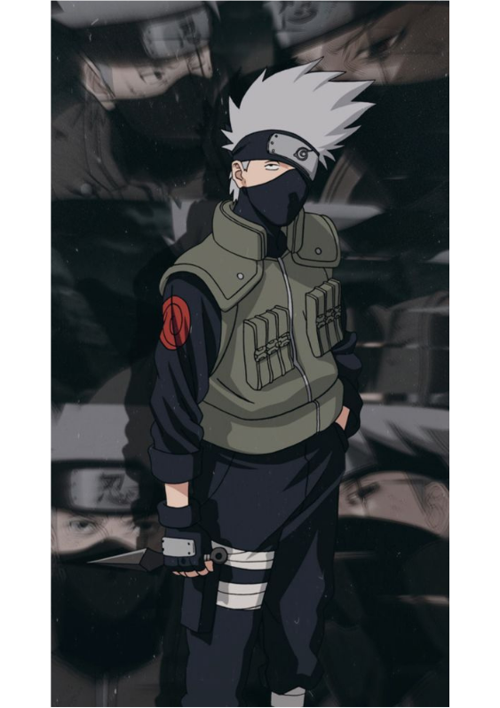
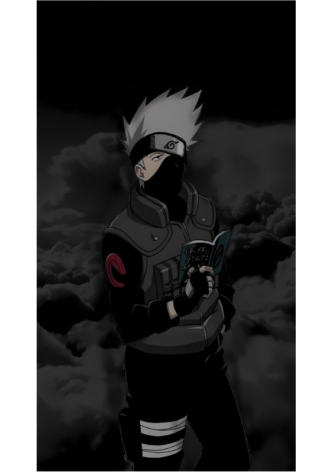
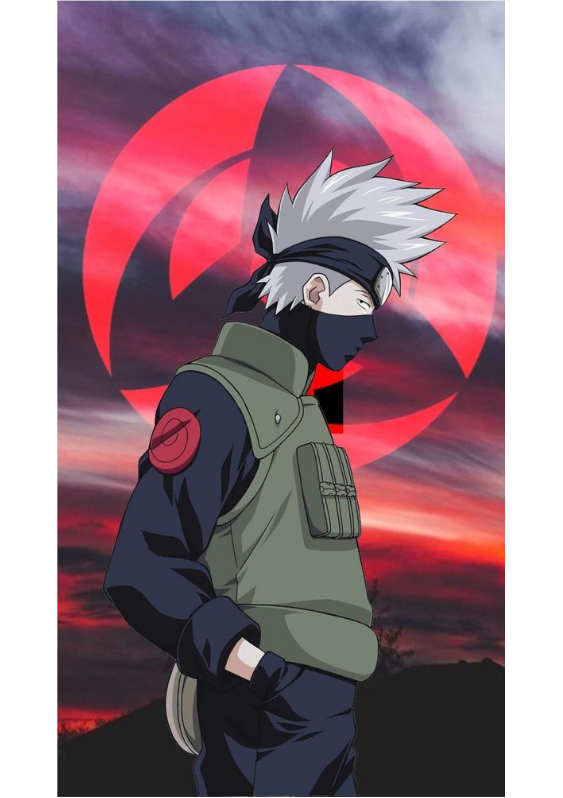
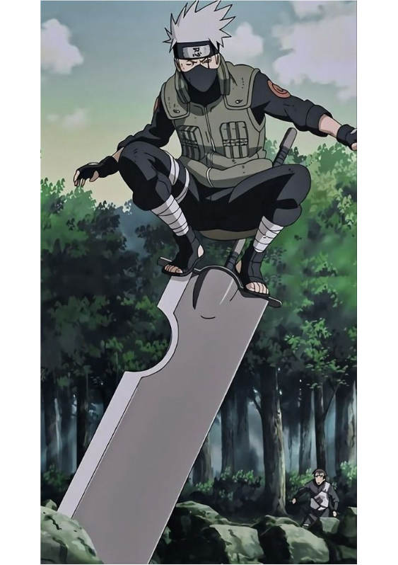

Kakashi Hatake
Kakashi Hatake é um dos personagens mais queridos do anime Naruto. Ele é o líder do Time 7, composto por Naruto Uzumaki, Sasuke Uchiha e Sakura Haruno. Mas você sabe qual é a história de Kakashi? Neste post, vamos contar um pouco sobre a vida e as aventuras desse ninja lendário. Kakashi nasceu como filho de Sakumo Hatake, um renomado ninja da Folha que era conhecido como o Canino Branco de Konoha. Desde pequeno, Kakashi mostrou ter um talento excepcional para as artes ninjas, se formando na Academia Ninja aos 5 anos e se tornando chunin aos 6. Ele também foi aluno do Quarto Hokage, Minato Namikaze, junto com seus companheiros Obito Uchiha e Rin Nohara. A vida de Kakashi mudou drasticamente durante a Terceira Guerra Mundial Ninja, quando ele perdeu seu olho esquerdo em uma missão e recebeu o Sharingan de Obito, que supostamente morreu ao salvá-lo. Kakashi também foi o responsável pela morte de Rin, que se jogou na frente de seu Chidori para impedir que ela fosse usada como uma arma pelos inimigos. Esses traumas fizeram com que Kakashi se tornasse mais frio e solitário, seguindo as regras ninja à risca. Após a guerra, Kakashi se tornou um jounin e um membro da Anbu, a força especial de elite de Konoha. Ele participou de diversas missões secretas e perigosas, ganhando fama e respeito como o Ninja Copiador, capaz de usar mais de mil jutsus graças ao seu Sharingan. Ele também foi o mentor de Itachi Uchiha, outro prodígio da Folha. Kakashi só voltou a ter uma vida mais normal quando ele foi designado para ser o sensei do Time 7, onde ele ensinou seus alunos os valores da amizade, do trabalho em equipe e do sacrifício. Ele também desenvolveu um laço especial com Naruto, vendo nele o reflexo de seu antigo mestre Minato. Kakashi ajudou Naruto a se tornar um ninja forte e determinado, capaz de realizar seu sonho de se tornar Hokage. Ao longo da série, Kakashi enfrentou diversos inimigos poderosos, como Zabuza Momochi, Orochimaru, Pain e Madara Uchiha. Ele também descobriu a verdade sobre o destino de Obito, que se tornou um dos principais vilões da história. Kakashi teve que lutar contra seu antigo amigo, mas também o perdoou e o ajudou a se redimir no final. Kakashi também teve um papel fundamental na Quarta Guerra Mundial Ninja, onde ele liderou as forças aliadas contra a Akatsuki e o exército de Zetsus brancos. Ele chegou a perder seu Sharingan e ficar temporariamente cego, mas recebeu os dois olhos de Obito antes de sua morte. Com isso, ele despertou o Mangekyou Sharingan duplo e usou seus poderes para ajudar Naruto e Sasuke a derrotar Kaguya Otsutsuki, a progenitora do chakra. Após a guerra, Kakashi se tornou o Sexto Hokage, governando Konoha com sabedoria e justiça. Ele também apoiou Naruto em sua jornada para se tornar o Sétimo Hokage e manteve uma boa relação com seus antigos alunos e amigos. Kakashi se aposentou do cargo de Hokage após alguns anos e passou a viver uma vida mais tranquila, dedicando-se à leitura de seus livros favoritos. Kakashi Hatake é um personagem complexo e fascinante, que passou por muitas provações e superações em sua vida. Ele é um exemplo de coragem, lealdade e inteligência, que inspira muitos fãs do anime Naruto. Esperamos que você tenha gostado de conhecer um pouco mais sobre ele neste post!




Agora, fique com um rap, do personagem KAKASHI, do rapper Player Tauz